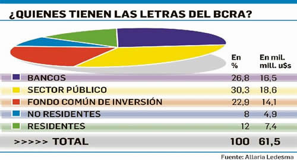

Real Chubut - Agencia de Noticias


Reservas: el mercado más preocupado por los depósitos que por Lebac

• MAÑANA VENCEN $645.000 MILLONES DE LETRAS DEL BANCO CENTRAL
Se cree que el daño colateral potencial del vencimiento de mañana está más o menos controlado. Lo que sí continúa preocupando es la sangría de divisas y que no escale a los depósitos.
Los veteranos mariscales que sobrevivieron a las batallas cambiarias de los 70 y 80 aún esperan que el Gobierno anuncie algo más, antes del vencimiento de mañana de las Lebac. Como por ejemplo, alguna o varias líneas contingentes con bancos centrales de la región o de mayor envergadura. Sin embargo, hay pocas expectativas. Lo cierto es que el BCRA enfrenta la próxima jornada un vencimiento del stock de sus letras superior al 50% (se perfilaba por encima de los $680.000 millones). Pero el accionar del BCRA en el mercado secundario de Lebac a lo largo de las últimas semanas ha reducido al viernes pasado, el monto que vence mañana a $645.000 millones.
Si bien el monto reducido no es tan significativo frente al total que vence (es poco más del 5%), aunque todavía hoy el BCRA puede seguir interviniendo y recomprando, el dato más relevante para los ahorristas son las tasas de interés que se fueron pactando. Porque como viene haciendo el Central desde hace meses, es en el mercado secundario de Lebac dónde manifiesta sus preferencias reveladas. Esto es así ya que en las licitaciones se convalidaron las tasas que había fijado en el secundario previamente. Al respecto, el viernes el BCRA operó por primera vez en la letra más corta, es decir, precisamente la que vence mañana. En ese plazo recompró $32.000 millones con tasas trepando al 70%. Luego operó $6.000 millones en la letra que vence en junio con tasas del orden del 43% anual. De modo que por lo visto hasta el viernes, los rendimientos de la próxima licitación de Lebac no distarían del 40% e incluso un poco más.
Con respecto al vencimiento de mañana si bien desde el BCRA intentan bajar los decibeles para descomprimir la idea de un "supermartes", en el mercado no se vislumbran mayores sorpresas debido a la estructura de la tenencia. Ya que entre los bancos y distintos organismos públicos y entes descentralizados (Anses, Sedesa, cajas previsionales, etc.), se concentra cerca del 60% del monto que vence. Tanto el Gobierno como los operadores descuentan que bancos y sector público aportarán un alto nivel de roll over (hubo encuentros formales e informales entre funcionarios y gente de la banca en la previa). El restante 40% está en manos privadas. Aquí está parte de la clave. Los inversores no residentes tienen en sus manos el equivalente al 5% de lo que vence, o sea, unos $33.000 millones (equivalente a unos u$s1.400 millones). Se descuenta que estos inversores irán a cerrar la apuesta del "carry trade" e irán por las divisas equivalentes. Quedan entonces las tenencias en manos de los Fondos Comunes de Inversión (FCI) y de los ahorristas residentes. Aquí está el mercado objetivo al que el BCRA deberá seducir con las altas tasas.
Pero el partido se jugará en el mercado de cambios porque ahí está el talón de Aquiles. No hay dólares para todos. Claro que tampoco los hubo en la convertibilidad, porque el uno a uno era solo para cubrir la base monetaria, o sea, que si además de los tenedores de pesos también iban al BCRA a buscar el equivalente en divisas de sus depósitos y otros activos nominados en moneda local, no había convertibilidad que hubiera resistido. Por ello si se descuenta que los extranjeros cancelarán e irán por sus dólares y otro tanto puede ser que los FCI y la gente también lo haga, resulta imprescindible que el Gobierno envíe un mensaje claro y concreto de defensa de las reservas o de alguna línea o red de contingencia en las próximas jornadas. Porque todas las estrategias marketineras fallecen en las trincheras cambiarias con semejante nivel de incertidumbre y desconfianza. Claro que para que se entienda bien, no es que la actual corrida cambiaria expuso recién ahora un deterioro de la credibilidad en el Gobierno, ya que si se mide por el nivel de atesoramiento desde que asumió Cambiemos, el público ha venido ahorrando en dólares desde que se levantó el cepo. O sea, la confianza en el peso nunca estuvo consolidada por más tasas de interés reales que prometían las Lebac. Cada mes la gente fue a comprar u$s1.500 millones mensuales. De modo que nada de esto es nuevo. El problema es que dejaron de entrar los dólares para satisfacer todas las demandas, de atesoramiento, de turismo y demás.
En tal sentido, no puede soslayarse que la demanda potencial de dólares para hoy no sería inferior a u$s960 millones producto de las ventas de Lebac en el mercado secundario pactadas sobre el cierre de la semana pasada. Gran parte de estas liquidaciones corresponden a FCI.
El BCRA irá con toda su batería de instrumentos, tasas altas en pesos, operará en el mercado de futuros del dólar, intervendrá en el mercado de cambios y en el secundario de Lebac. Se estima que la porción que los bancos no renueven volverá luego vía Leliq y quizás algo a alimentar el canal crediticio.
Tanto el BCRA como el mercado espera sortear con un leve daño colateral el vencimiento de Lebac de mañana. Pero lo que más les inquieta es detener la hemorragia de reservas y que esto no escale a una corrida bancaria. Está claro que las reservas del BCRA cubren el stock de Lebac, como así lo ha repetido incansablemente el ente monetario. Por eso, ante una demanda excedente en el mercado cambiario la presión sobre las reservas se intensifica. Urge armar una red de contención para fortalecerlas. En nada ayuda las manifestaciones políticas como la de la diputada Carrió para que los exportadores liquiden y hagan patria. Porque si algo dejó en claro la historia es que cuando los funcionarios intentan hablarle al corazón del mercado, reina el autismo. Parece que nadie aprendió nada.
Fuente: Ambito